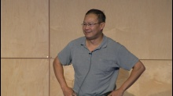

The theme of GoingNative 2013 is decidedly pragmatic - to inform and educate the global C++ developer community with the latest information about ISO C++11 and draft C++14. Fro…
A C++ REST SDK: OSS web services on Windows and Linux [WMV] [0:32:17] [2013/12/13]C++ 11 is a thoroughly modern and productive language, but it is often seen as long in the tooth when it comes to connecting to cloud. In particular, consuming and authoring REST services in…
Compiler Confidential[WMV] [1:02:01] [2013/12/13]Modern CPU and instruction set architecture improvements are critical to the performance of software, but it's the compiler that can make your code sing. Come learn how compiler optimizations are…
Herb's UI Challenge[WMV] [0:10:53] [2013/09/07]In his keynote, Herb challenged GN13 attendees to make a UI app from scratch using ISO C++, openFrameworks and/or Cinder libraries. Let's see what they came up with!
C++ and the Windows Runtime[WMV] [0:39:56] [2013/09/05]In this talk, Ales discusses the evolution of the Windows platform and the story of its development, and the key role that C++ plays in it. In the spirit of "Going Native", the new…
Everything You Always Wanted to Know About Threading (But...)[WMV] [0:57:29] [2013/09/02]In this talk, Elliot discusses the history of threading in Windows and surveys thread scheduling, threadpool internals, UI thread behavior, the new ASTA UI infrastructure, and the WinRT async pattern.
Bringing await to C++[WMV] [0:38:25] [2013/08/27]Modern application development requires asynchronous programming techniques. For C++, this generally involves using libraries employing promises or futures or tasks, a la PPL and std::future.…
Find-Build-Share-Use: Using NuGet for C and C++ Libraries [WMV] [0:20:28] [2013/08/22]Finally! NuGet package management-long reserved for managed developers-is finally here for C/C++ developers! Discover the simplicity of finding and consuming native library packages in NuGet,…
The Way of the Exploding Tuple [WMV] [0:25:24] [2013/08/22]People commonly ask: “If I have a tuple<T...> and a function fun(T...), how do I generically call the function passing the tuple as arguments?” It’s a short piece of quite unusual code.
My Favorite C++ 10-Liner [WMV] [0:26:42] [2013/08/22]I’ll share my favorite 10-line piece of C++ code I’ve come across and explain just how amazingly much it does in those 10 lines. And, if that doesn’t fill 20 minutes, I might just share more…
Inheritance Is The Base Class of Evil[WMV] [0:24:19] [2013/08/22]Implementing non-intrusive runtime polymorphic objects with value-semantics, and multiple-undo in 20 minutes.
Q&A Panel[WMV] [0:50:08] [2013/08/22]Attendee-driven Q&A with Day 3 speakers: Herb Sutter, Niklas Gustafsson, Elliot H. Omiya, Sean Parent, Michael Wong, and Eric Brumer.
Compiler++[WMV] [1:13:40] [2013/08/20]In order to successfully deliver new and innovative C++ compiler technology on a regular basis, compiler vendors must respond to yearly microprocessor advancements. Additionally, the…
Interactive Panel: Ask Us Anything[WMV] [1:18:46] [2013/08/20]Attendee-driven Q&A with Day 1 and Day 2 speakers: Bjarne Stroustrup, Andrei Alexandrescu, Herb Sutter, Scott Meyers, Chandler Carruth, Sean Parent, Michael Wong, and Stephan T. Lavavej.
rand() Considered Harmful [WMV] [0:31:27] [2013/08/18]When you need a random number, don't call rand() and especially don't say rand() % 100! This presentation will explain why that's so terrible, and how C++11's <random> header can make…
C++14: Through the Looking Glass [WMV] [1:01:09] [2013/07/29]“The time has come,” the ISO said, “To talk of many things: Of move-capture—and literals— Of making lambdas sing— And why deduction is so hot— And if digits should grow wings?” So have you heard of…
The Care and Feeding of C++s Dragons  [WMV] [1:34:46] [2013/07/29]
[WMV] [1:34:46] [2013/07/29]Last year I described C++ as bearing the cautionary label ‘Here Be Dragons.’ And yet we’re all still writing C++ because it is the best programming language for the problems we face.…
Keynote: Herb Sutter - One C++[WMV] [1:31:27] [2013/07/29]Herb Sutter, language architect of Visual C++ and Chairman of the ISO C++ Committee, opens Day 2 with a brand new talk, "One C++".
An Effective C++11/14 Sampler[WMV] [1:15:45] [2013/07/29]After years of intensive study (first of C++0x, then of C++11, and most recently of C++14), Scott thinks he finally has a clue. About the effective use of C++11, that…
Dont Help the Compiler [WMV] [1:17:00] [2013/07/29]C++ has powerful rules for dealing with low-level program structure. Before a program is ever executed, the compiler determines valuable information about every expression in the source code.…
Writing Quick Code in C++, Quickly [WMV] [1:11:37] [2013/07/29]Contemporary computer architectures make it possible for slow code to work reasonably well. They also make it difficult to write really fast code that exploits the CPU amenities to their fullest. And…
Bjarne Stroustrup - The Essence of C++: With Examples in C++84, C++98, C++11, and C++14 [WMV] [1:36:42] [2013/07/29]C++11 is being deployed and the shape of C++14 is becoming clear. This talk examines the foundations of C++. What is essential? What sets C++ apart from other…
C++ Seasoning [WMV] [1:17:12] [2013/07/29]A look at many of the new features in C++ and a couple of old features you may not have known about. With the goal of correctness in mind, we’ll see how to utilize these features to create…